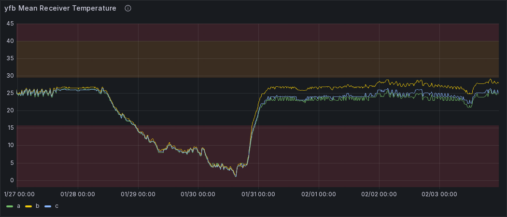

Weekly Highlights 20260128-20260204
1/28-1/30 - YYR L1/L2 Bias Error
- 1/28 01:35 - YYR WRS L1/L2 Bias Error
- 1/28 03:59 - YYR WRS alarmed with SE 721 PID WRS Down for ZDC Only; ongoing comm issues / loss of redundancy since 1/25...
- 1/30 14:56 - YYR WRS L1/L2 Bias Error
1/29 - NOC OM RMD Archive Full
- 1/29 07:29 - NOC OM Archive Storage 100%; RMD enabled at 1/29 09:54
- 1/29 20:26 - NOC OM alarmed with SE 1 Recording Device Fault; Archive Storage 100% at 1/29 20:50 -- ref LIR 1111065624; RMD enabled at 1/30 09:56
1/29-2/3 - GUS Tap Tool Ports Affected by SxS Updates
- 1/29 19:52 - DX1 / SZ1 Network Taps alarmed with Tool Port Down / Up due to SxS updates; last events at 1/29 22:06
- 1/30 17:43 - SZ1 GUS Taps Tool Port Down/Up due to SxS updates
- 1/30 19:24 - DX1 GUS Taps Tool Port Down/Up due to SxS updates
- 1/30 22:35 - AP1 / BR2 GUS TAP-B Tool Port Down/Up due to SxS updates
- 1/30 22:36 - CM1 / BR1 GUS Taps Tool Port Down/Up due to SxS updates
- 2/3 19:14 - CM1, DX1, SZ1, BR1 both Network Taps Tool Ports Down / Up due to SxS updates
- 2/3 19:14 - BR2, AP1 TAP-B Tool Ports Down / Up due to SxS updates
1/30 - ZKC WRE-C Power Panel Work
- 1/30 04:57 - ZKC WRE-C to Maintenance and Shutdown
to facilitate ASCO SW replacement. ORMP-26-00207 PWR work-- ref LIR 1110552424- 1/30 05:05 - ZKC Ring 2 comms down hard due to power work; both lines cleared at 1/30 07:29 (~8661 seconds)
- 1/30 07:58 - ZKC WRE-C Faulted during Verification with SEs 29,52,53,59; Reset and restored to Normal at 1/30 08:31
1/30 - YFB Temperature Drop
- 1/30 09:01 - YFB WREs alarming with SE 309 Processor Power / Fan Failure; temperatures plummeting at the site; temperatures normalized by 1/31 00:50

2/3 - NOCC O&M Replaced
- 2/3 13:31 - NOC O&M to Maintenance to replace operational O&M with new spare from Depot -- ref LIR 245477621; restored to Normal at 2/3 15:11
Various Comm Impacts
* Only captures major / long-term comm outages
YYR Comms
- 1/29 03:16 - YYR Ring 2 comms down hard -- OFFLINE...
- 1/29 12:42 - YYR Ring 1 comms came back up
to flapping (~354927 seconds; down since
1/25); down hard again at 1/29
13:25...
- 1/29 14:45 - YYR Ring 1 comms came back up to flapping (~4819 seconds); down hard again at 1/29 15:44...
- 1/29 16:27 - YYR Ring 1 comms came back up to flapping (~2606 seconds); down hard again at 1/29 18:16...
- 1/30 14:48 - YYR Ring 1 comms flapping;
last event cleared at 1/30 14:56 (~131
seconds total)
- 1/30 14:56 - YYR WRS L1/L2 Bias Error
- 1/30 16:16 - YYR Ring 1 comms flapping; last event cleared at 1/30 16:47 (~289 seconds total)
- 1/30 17:48 - YYR Ring 2 comms cleared (~138737 seconds; down since 1/29)
- 1/30 19:23 - YYR Ring 1 comms flapping; last event cleared at 1/30 20:33 (~1496 seconds total)
- 1/31 00:03 - YYR Ring 1 comms returned to flapping with extended down; last event cleared at 1/31 02:02 (~19327 seconds total)
- 1/31 21:58 - YYR Ring 1 comms flapping; last event cleared at 2/1 02:24 (~3058 seconds total)
YFB Comms
- 1/29 08:22 - YFB Ring 1 comms came back up
to flapping (~339582 seconds; down since
1/25); down hard again at 1/29
09:23...
- 1/29 10:11 - YFB Ring 1 comms came back up to flapping (~2864 seconds)
- 1/29 11:49 - YFB Ring 1 comms cleared (~343855 seconds total)
- 1/29 21:50 - YFB Ring 1 comms down hard...
- 1/30 02:28 - YFB Ring 1 comms came back up to flapping (~16670 seconds); last event cleared at 1/30 02:36 (~208 seconds total)
- 1/30 21:04 - YFB Ring 1 comms flapping until down hard at 1/30 21:40...
- 1/31 03:59 - YFB Ring 1 comms returned to flapping until down hard at 1/31 04:20; last event cleared at 1/31 04:56 (~25450 seconds total)
- 1/31 18:47 - YFB Ring 1 comms flapping; last event cleared at 1/31 19:27 (~1098 seconds total)
- 1/31 21:43 - YFB Ring 1 comms flapping until down hard at 1/31 22:27...
- 2/1 02:56 - YFB Ring 1 comms return to flapping until down hard again at 2/1 03:08...
- 2/1 04:03 - YFB Ring 1 comms return to flapping until line cleared at 2/1 04:16 (~3532 seconds total)
- 2/2 01:52 - YFB Ring 1 comms flapping; last event cleared at 2/2 02:35 (~828 seconds flapping)
Other Sites
- 1/29 05:31 - ZBW Ring 1 ALT / Ring 2 PRI comms down hard; both lines cleared at 1/29 05:34 (~161 seconds)
- 1/29 07:24 - ZHU Ring 1 ALT / Ring 2 PRI comms down hard; both lines cleared at 1/29 10:29 (~11096 seconds)
- 1/29 11:47 - CDB Ring 2 comms flapping; last event cleared at 1/29 12:13 (~550 seconds total)
- 1/30 08:51 - BIL Ring 1 PRI / Ring 2 ALT comms flapping; both lines cleared at 1/30 08:55 (~180 seconds total)
- 1/30 12:40 - ZOB Ring 1 ALT / Ring 2 PRI comms down hard; both lines cleared at 1/30 13:15 (~2100 seconds)
- 2/1 02:51 - CDB Ring 1 comms down hard; line cleared at 2/1 03:05 (~811 seconds)
- 2/1 03:15 - CDB Ring 2 comms down hard; line cleared at 2/1 03:28 (~769 seconds)
- 2/1 15:48 - CDB Ring 2 comms down hard; line cleared at 2/1 15:49 (~95 seconds)
- 2/2 20:54 - MTP Ring 1 comms down hard -- OFFLINE; comms continued flapping with long durations offline until last event cleared at 2/3 20:24 (~87995 seconds total)
- 2/3 08:20 - HNL Ring 1 ALT / Ring 2 PRI comms down hard; both lines cleared at 2/3 08:50 (~1820 seconds)
- 2/3 13:10 - CDB Ring 2 comms down hard; line cleared at 2/3 13:33 (~1363 seconds)
- 2/4 07:40 - ZAB Ring 1 PRI / Ring 2 ALT comms down hard; both lines cleared at 2/4 10:00 (~8370 seconds)
1/25/26-2/1/26 YYR Ring 1 Comms Down
ISR 0125-0363 ZAU<->YYR. Net1 down
-- ref LIR
1109439124
- 1/25 09:54 - YYR Ring 1 comms flapping until down hard at 1/25 10:07...
- 1/29 03:16 - YYR Ring 2 comms down hard -- OFFLINE...
- 1/29 12:42 - YYR Ring 1 comms
c back up to flapping (~354927
seconds; down since
1/25); down hard
again at 1/29 13:25...
- 1/29 14:45 - YYR Ring 1 comms came back up to flapping (~4819 seconds); down hard again at 1/29 15:44...
- 1/29 16:27 - YYR Ring 1 comms came back up to flapping (~2606 seconds); down hard again at 1/29 18:16...
- 1/30 14:48 - YYR Ring 1 comms flapping; last event cleared at 1/30 14:56 (~131 seconds total)
- 1/30 16:16 - YYR Ring 1 comms flapping; last event cleared at 1/30 16:47 (~289 seconds total)
- 1/30 17:48 - YYR Ring 2 comms cleared (~138737 seconds; down since 1/29)
- 1/31 00:03 - YYR Ring 1 comms returned to flapping with extended down; last event cleared at 1/31 02:02 (~19327 seconds total)
- 1/31 21:58 - YYR Ring 1 comms flapping; last event cleared at 2/1 02:24 (~3058 seconds total)
1/25/26-2/1/26 YFB Ring 1 Comms Down
ISR 0125-0363 ZDC<->YFB Net1 down
-- ref LIR
1109439324
- 1/25 09:57 - YFB Ring 1 comms flapping until down hard at 1/25 10:02...
- 1/29 08:22 - YFB Ring 1 comms
came back up to flapping
(~339582 seconds; down since
1/25); down hard
again at 1/29 09:23...
- 1/29 10:11 - YFB Ring 1 comms came back up to flapping (~2864 seconds)
- 1/29 11:49 - YFB Ring 1 comms cleared (~343855 seconds total)
- 1/29 21:50 - YFB Ring 1 comms down hard...
- 1/30 02:28 - YFB Ring 1 comms came back up to flapping (~16670 seconds); last event cleared at 1/30 02:36 (~208 seconds total)
- 1/30 21:04 - YFB Ring 1 comms flapping until down hard at 1/30 21:40...
- 1/31 03:59 - YFB Ring 1 comms returned to flapping until down hard at 1/31 04:20; last event cleared at 1/31 04:56 (~25450 seconds total)
- 1/31 18:47 - YFB Ring 1 comms flapping; last event cleared at 1/31 19:27 (~1098 seconds total)
- 1/31 21:43 - YFB Ring 1 comms flapping until down hard at 1/31 22:27...
- 2/1 02:56 - YFB Ring 1 comms return to flapping until down hard again at 2/1 03:08...
- 2/1 04:03 - YFB Ring 1 comms return to flapping until line cleared at 2/1 04:16 (~3532 seconds total)
- 2/1 01:52 - YFB Ring 1 comms flapping; last event cleared at 2/1 02:35 (~828 seconds flapping)
5/11/23 Mexico Ring 2 Down Hard...
- 5/11/23 17:01 - MX Ring 2 SatCom upgrade begins; MX Ring 2 OFFLINE until upgrade troubleshooting is complete...
- Targeting network upgrade in CY26
List of current offline WREs
List of current offline WREs -- ref WAAS Status Monitor
All Depot shipments to Mexico are halted until the customs process can be finalized
Currently working to assess MX Inventory to determine equipment refresh and restoration needs...
- MMD WRE-C - 10/20/25-... - Good Freq Std swapped into WRE-A to restore -- ref LIR 211505621
- MTP WRE-A - 9/23/25-...
- PCU Failed after power outage; PCU-B swapped
into WRE-A but DC output is non-functional...
ref LAD
1060696524
- Planning to swap PCU-C into WRE-A -- this will remove WRE-C from service, but allow us to restore WRE-A for analysis
- MTP WRE-B - 11/18/24-... - Receiver inits failing due to no DC Power from PCU; PCU swapped with PCU-A after PCU-A failed -- ref LIR 898330924
- MPR WRE-B - 5/3/24-... - Inits failing -- looks like a bad freq std; due to shipping issues, there is no spare Freq Std and no ETA to recover WRE-B... -- ref LIR 44170821

Major Events


Core I/F Status

Comm Events

Mexico Comm Status